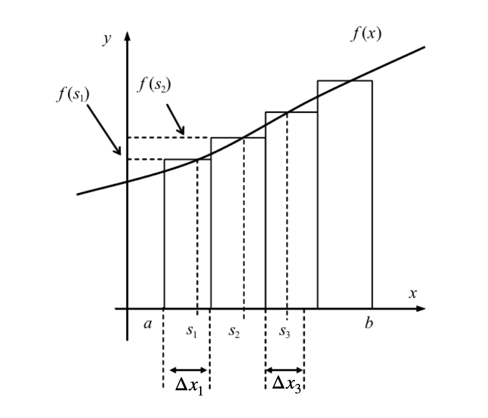
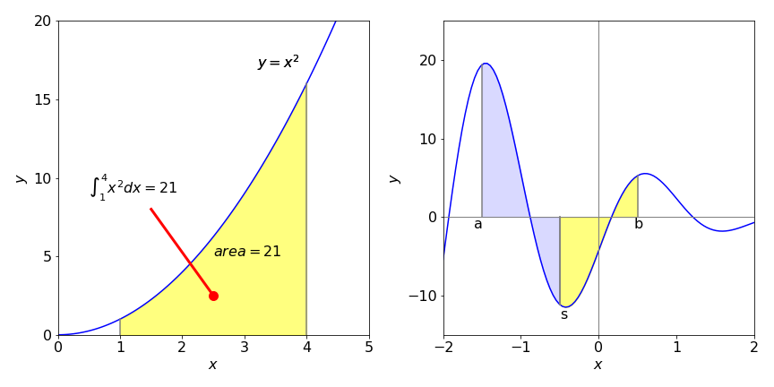
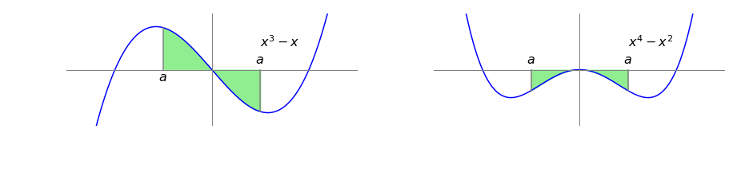
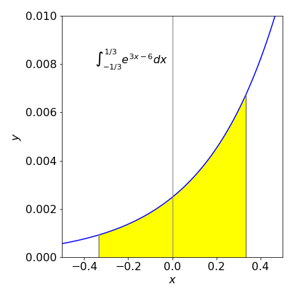
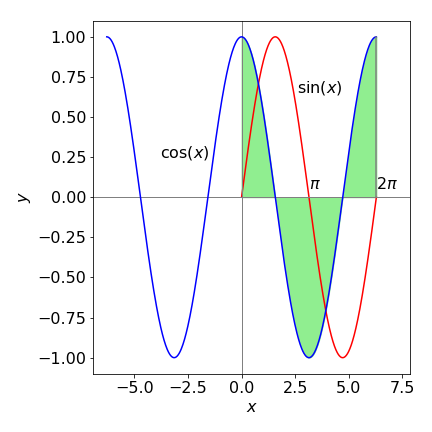

1 Integration basics
Contents
1 Integration basics#
# import all python add-ons etc that will be needed later on
%matplotlib inline
import numpy as np
import matplotlib.pyplot as plt
from sympy import *
init_printing() # allows printing of SymPy results in typeset maths format
plt.rcParams.update({'font.size': 16}) # set font size for plots
1.1 Basic concepts#
Broadly speaking, integration is used to calculate the amount of some quantity. This might be the total concentration of a chemical product produced up to a certain time, the total amount of work done by a gas when expanding or that done in moving an object against gravity. Consider, for example, calculating the amount of oxygen in a tall column of still air. This is not simply the volume of the column times the gas density because gravity increases the O\(_2\) concentration close to ground level. To calculate the total amount of O\(_2\), the change in density has to be allowed for by integrating from the ground upwards, which means knowing how the density varies with altitude. Bearing in mind that integration will give us the total amount of O\(_2\), the obvious way would be to take the column and divide it into many thin horizontal slabs, work out the amount of O\(_2\) in each, and add them all up. The integral is the result that would be obtained when the slabs are made infinitesimally thin and, as with differentiation, the change is from a finite amount to an infinitesimal one, \(\Delta x \to dx\). When this change is made the summation becomes an integral.
Now consider a general curve described by some function \(f(x)\), and further suppose that it can be integrated because not all functions can be. Imagine splitting the area under a graph of \(f(x)\) into \(n\) small rectangles over the range \(x = a\) to \(x = b\) some of which are shown in the sketch, Figure 1, where there are only four rectangles. The purpose of doing this is to find the total area under the curve as accurately as possible. The total area of all the rectangles is
and the value of the function at position \(s_1\) is \(f(s_1)\) and so forth. You can see that the rectangles only very approximately follow the curve since only four are used and a poor approximation to the area under the curve is obtained.
To increase the accuracy of the calculation, it is obvious that the rectangles have to be made narrower and more of them have to be used. When \(\Delta x_i\) is made infinitesimally small, in the limit \(\Delta x \to 0\) and \(n \to \infty\), the summation \(A_{approx}\), still over the range \(a\) to \(b\), becomes the definite integral
which is, without approximation, exactly the area under the curve of \(f(x)\) from an \(x\) value of \(a\) to that at \(b\). The integration range \(a \to b\) is often called the closed interval \(a\) to \(b\) and the definite integral is sometimes called the Riemann integral. The area under the curve \(f(x)\) is calculated even though the function depends only on \(x\), and this is because \(f(x)dx\) is dimensionally the height \(f(x)\) times the width \(dx\). In a general sense, integration increases the dimension of the calculation: a point to a line, a line to an area, an area to volume and so forth.
Often, the curve falls entirely below the x-axis and integration will produce a negative result. Mathematically, there is nothing wrong with a negative area but sometimes this may present a problem in imagining the integration as an area belonging to something physical; however, work and energy can be positive or negative, so the context is all important in interpreting what the integration means. A result should be checked against intuition, by asking the question: ‘am I expecting a positive or a negative result?’ You might also want to ask ‘is the result going to be large or small?’.

Figure 1. Pictorial representation of the integral as area under a curve shown as a very approximate evaluation of an integral as the sum of a set of narrow rectangles. The width of each rectangle is made to approach zero, and their number increased to infinity, when the integration is performed.
(i) A note on notation#
The integration operation be written either as \(\int f(x)dx\) or \(\int dx f(x)\). The latter is often used in physics texts particularly when \(f(x)\) is a long and complex expression. In this case the integration is always assumed to extend over the function immediately following \(dx\). As an aside, the symbol \(\int\) was first introduced by Leibniz (1646 - 1716) is the stylized \(S\) from the Latin word summa, reminding us that integration and summation are intimately linked. Leibniz named the integral calculus, calculus summatorius. An integral is also sometimes called an anti-derivative.
1.2 Indefinite and Definite Integrals#
Integrating a function, \(f(x)\), called the integrand, produces a new function \(g(x)\), the integral, when the integration operator \(\int \cdots dx\) is used; the notation is
This result is an indefinite integral and a constant is always added to the answer because the starting and ending values of \(x\) were not defined. You can see from figure 2 that the result of integration is going to be different depending on where the integration starts and ends. The constant effectively allows this to be determined later. Recall that differentiating a constant produces zero, and therefore differentiating \((g(x) + constant)\) reproduces \(f(x)\) no matter what value the constant has, i.e. the constant is arbitrary, therefore
The integration symbol \(\int\) of equation 1 has no upper and lower limits on it, and this indicates that it is an indefinite integral. When the limits are added to an integration a definite integral results, and this is a number independent of the variable \(x\), provided that the chosen limits \(a\) and \(b\) are not functions that themselves contain \(x\);
The symbol \( \bigg|_a^b\) is the substitution symbol. Because neither \(g(b)\) nor \(g(a)\) are functions of \(x\), \(g(b) - g(a)\) is a number and differentiating the result with respect to \(x\) would produce zero. The definite integral, equation 2, is sometimes called the fundamental theorem of calculus.

Figure 2 left, and 3 right. Left. The integral of \(x^2\) from \(1 \to 4\), changing the limits changes the value of the integral. Right, integration limits \(a, \, b \) and \(s\).
Work done by gas#
An example met early on in studying thermodynamics is to calculate the work \(w\) done on an ideal gas, as its volume changes. Work is force \(\times\) distance moved, pressure is force divided by area, so work is also the pressure \(\times\) change in volume. To account for a series of infinitesimal volume changes, \(dV\), made under reversible conditions, the quantity \(pdV\) must be integrated. The integral is
and, by convention, the negative sign indicates that work is done on the gas. As it stands, this integral cannot yet be solved because we need to know how \(p\) and \(V\) are related. The next step is to use the ideal gas law, \(pV = nRT\), to make an integral in \(V\) alone, giving
This equation tells us that the work done on the gas is linearly proportional to the number of moles \(n\) present and to the gas constant \(R\) times the temperature \(T\). It also tells us that the work is the area under the curve of \(1/V\) as \(V\) is changed. Assuming that we already know how to do the integration, which is explained below, the result is
The constant appears because no upper or lower limit on the volume was defined and so the value of the constant is unknown. Mathematically this equation is fine as it stands, but to add real numbers the log has to be dimensionless, however, volume has dimensions of m\(^3\) therefore \(V\) in the equation is made dimensionless by simply taking its numerical value. Doing this is not strictly correct but as the constant is arbitrary until some values are added, the equation is better rewritten as
where the constant is now changed to \(\ln(V_c)\). \(V_c\) still does not have a value, that will depend on the actual case being studied, but now has units of volume, which reminds us that the log is dimensionless.
In the case where the gas is not ideal the pressure will be given by some other function. One such was devised by van der Waals and has the form
where \(a\) and \(b\) are constants depending on the particular gas.
1.3 Changing limits, integrating odd and even functions#
A definite integral is the difference in value of the integral calculated at the two limits, equation 2, and changing their the order clearly produces -1 times the result,
Furthermore, if there is a point \(s\) between limits \(a\) and \(b\) then the integral can be split into two continuous parts. Using common sense, it is not surprising that the total is the sum of the parts by thinking of the result of integration as an area. Suppose the limits range from \(a\) to \(s\) and then \(s\) to \(b\), then
which is shown in figure 3 above.
When the limits are \(\pm a\) and 0 the relationship
is sometimes useful. Does this make sense? Try it on equation 2 to convince yourself.
An integral with symmetrical limits \(-a \to a\) can be written in different forms
and this is also very useful in determining whether the integral is zero or not.
An odd function has the property \(f(-x) = -f(x)\), and when integrated about the symmetrical limits \(-a \to +a\) the integral will always be zero. An even function has the property \(f(-x) = f(x)\); the integral from \(-a \to +a\) may perhaps be small but is not exactly zero. Determining whether integrals are zero or not is important in the study of quantum mechanics and spectroscopy. However, the part of Group Theory dealing with Point Groups has to be used to examine more complex functions than is apparent from simple ‘odd-even’ behaviour. An introduction is given in chapter 7 Matrices.
The left graph, figure 4, shows an odd function, \(x^3 - x\). There are many others; for example, \(\sin(x)\) over the range \(\pi \to \pi\), where the area from zero to \(-x\) is equal but opposite to that from \(0 \to x\) making zero in total. The integral
and this is because because \(a^4 = (-a)^4\) and \(a^2 = (-a)^2\). The right-hand graph shows an even function where the area is not zero but negative.

Figure 4. left. An odd function \(x^3-x\). The symmetrical range of the integration is shaded, \(a=3/4\) and the integral is zero. Right. The even function \(x^4-x^2\) where the integral is not zero but is negative.
(i) Summary#
Only with symmetrical limits
1.4 Differential equations#
Despite their name, differential equations are solved by integration. The first-order equation
is used to describe many phenomena. Depending on the sign, \(\pm\), these include radioactive decay, the decay of excited states, growth of bacteria, first-order chemical reactions, solubility of solutes, concentration in a centrifuge, and change of atmospheric pressure with height.
If \(c\) is a concentration, the equation tells us that the rate of change of the concentration of species \(c\) is proportional to the amount of \(c\) present (and so unreacted) at any time \(t\). The constant of proportionality being is the rate constant \(k\). If the sign is negative, this indicates that \(c\) is being lost and is forming another species that is not specified in the rate equation such as A \(\to B\) This differential equation is solved by separating out the two variables \(c\) and \(t\) and integrating each side separately:
This example shows that the integration takes us from describing the rate of a process to the actual quantity, in this case, from the rate of change of \(c\) with time, to the amount of \(c\) at any time: \(\ln(c) = -kt + const\). To make sure that the log is dimensionless, the equation can again be rewritten in an equivalent form as \(\ln(c/c_0) = -kt\), where \(c_0\) is a constant equal to the amount of \(c\) present at \(t = 0\). Solving differential equations is described in detail in Chapter 10.
To show how integration can solve many chemical and physical problems is one aim of this chapter, but first, the mechanics of performing integration must be understood.
2 Mechanics of integration#
Integration is often a trial and error process, and some experimenting with different options is necessary even when using the computer. Start by simplifying expressions, perhaps by using partial fractions, then look for standard formulas and standard methods such as integration by parts. If none are found suitable, substitutions can be tried, then standard forms and methods looked for again because only with these can an integration be found. If all else fails, numerical methods have to be used; see Chapter 11.
The integration formulae for various functions can be derived in a similar way to that for differentiation by taking small values of \(dx\) and \(dy\) and then calculating \(x + dx\) and \(y + dy\). The method is now well established and most results are given below without derivation. Understanding the physical world is hard enough work without having to prove all of mathematics before we can use it!
Several integrations are listed in Section 13, and Sympy can be used to do even more complex integrations. Why then, you might ask, should you bother to learn how to do integration? Calculations are done ‘by hand’ not only because it is often easier and quicker to do so, but also because it encourages a greater understanding of how the result was obtained. Additionally computer methods do not always work, and if you have an answer how will you know that it is correct if you have no understanding of the processes involved.
2.1 integrating powers of x, but not 1/x#
Integrating \(x^2\) produces \(\displaystyle \int x^2dx=\frac{x^3}{3}+const\) as can be seen differentiation of the result. Similarly,
The general rule for any power of \(x\), other than \(x^{-1}\), should be remembered and is
Definite integrals have limits that are determined by the problem being solved, for example
and the definite integral is always evaluated by substituting the two limits into the algebraic result of the integration and therefore there is no constant term, as shown in figure 2. Notice the vertical line after the calculation and the limits top and bottom to the right of this. The top limit always comes first in the evaluation and the value of the integral with the second limit is always subtracted from the first. In integrations representing physical phenomena, such as the expansion or compression of a gas, the lower limit is always the initial or starting value and the upper limit the final value no matter which is larger.
2.2 Integral of dx, \(\int dx\), \(\int d\ln(x)\) and similar expressions#
In chemistry and physics textbooks it is not uncommon to meet expressions such as \(\int dx,\; \int d \ln(x)\), or \(\int d \sin(x)\). These cases are the simplest to evaluate because the answer is given in the integral,
and so on; \(c\) is an arbitrary constant.
2.3 Integrating 1/x and 1/(ax+b) produces a logarithm#
The \(\displaystyle \frac{x^{n+1}}{n + 1}\) rule is not going to work when \(n = -1\) as this will produce \(1/0\) which is infinity. In the case of reciprocal \(x\) the integral is:
where the last result is only possible if \(a\) and \(b \gt 0\). If \(a = 1\), for example, \(\displaystyle \int_1^x \frac{dx}{x}=\ln(x)\) because \(\ln(1)=0\).
Note that to produce a log, the denominator must be linear in \(x\), e.g. \(2 + 3x\), but cannot contain anything like \(x^2\) or \(x^3\). The general formula is
(i) Reaction on a surface#
Suppose that there are a large number of sites on a surface that can accept and react with a molecule reaching this from solution. Any one of the sites can either be occupied or empty. If \(p(t)\) is the chance of being occupied at time \(t\), let \(k_d \delta t\) be the chance of becoming unoccupied (desorbing) in the interval \(\delta t\). The average fraction becoming unoccupied is then \(k_d p(t)\delta t\) in the interval \(t\to t+\delta t\). Similarly, let the chance becoming occupied in the same time be \(k_ap(t)\delta t\) where \(k_a\) is the adsorption rate constant. The fraction of sites occupied is then \(k_ap(t)(1 - p(t))\delta t\) which is the chance of being occupied multiplied by the chance that there is an empty site. The total rate of change in the limit \(\delta t\to dt\) is
Integrating this by hand and using the table in section 2.14 or by using Sympy produces, after some simplification,
Note that as \(p\) is a probability it is dimensionless, \(k_a,k_d\) have units of s\(^{-1}\). The constant is determined by letting \(p_0\) be the value of \(p\) at \(t=0\).
This model has also been used to describe how populations of animals change when many different sites are available for them to occupy and also compete for; see Briton (2003).
2.4 Partial fractions#
Integrations involving reciprocal powers of \(x\) can often be solved by expanding as partial fractions and then integrating each term as a log. The method of obtaining a partial fraction is systematic, as illustrated in the following example. Suppose the integration required is
and this has to be simplified; the hardest part is factoring the denominator. Some experimenting is often required, however, the SymPy \(\mathtt{factor(\cdots)}\) instruction can make this easier,
x = symbols('x')
factor( x**2 - 2*x - 15 )
The function to integrate becomes
The next step is to write this in terms of two fractions with constants \(A\) and \(B\) that must be determined, hence we write
By equating the left- and right-hand expressions,
which is true for all values of \(x\). Therefore, if \(x = -3\) then \(A = 6/8 = 3/4\) and if \(x = 5\) then \(B = 1/4\). The integration becomes
Of course we could use Sympy to do the whole integration
x = symbols('x')
eq = (x-3)/(x**2-2*x-15)
integrate(eq, x )
2.5 Integrating exponentials#
When differentiating an exponential, the exponential is returned but multiplied by the derivative of the function within the exponential. For example the derivative
Integrating both sides gives
therefore the general form, after rearranging and with \(c\) as the constant, is
Note that this formula only applies when the argument to the exponential is to the first power of \(x\) and some constants. Integrating \(e^{-x^2}\), for example, cannot be done this way.
An example

Figure 5. The exponential \(e^{3x-6}\) and its integral from -1/3 to 1/3.
2.6 integrating sine, cosine and tangent#
Differentiating the sine or cosine produces one from another and so it should not come as a surprise that the same happens upon integration. For example,
integrating both sides and rearranging produces, \(\displaystyle \int\sin(3x+2)=-\frac{1}{3}\cos(3x+2)+c\). Similarly the general forms are
and
Note first the sign change between sine and cosine and also that these integrations are true only for first powers of \(x\).
The sine and cosine functions illustrate clearly that integration is the area under the curve. In figure 6 the cosine and sine curves are plotted. The area under the cosine curve when integrated from \(0 \to x\) is the cosine integral, which is the value of the sine curve at \(x\), i.e. \(\sin(x)\). Putting limits into the integration gives
and when \(a = 0\) the integral is \(\sin(x)\). When \(x = 2\pi\) there is as much of a positive as negative area shaded making the total area zero as is \(\sin(2\pi\)). The area under the cosine from \(0 \to \pi\) is also similarly zero and so is \(\sin(\pi)\).

Figure 6. The shaded area under the cosine curve is zero from \(0 \to 2\pi\); the integral from zero to \(x\) is the sine curve, which is also zero at \(2\pi\). The integral is also zero at 0 and \(\pi\).
2.7 Integrating the exponential form of trig functions#
The sine, cosine, and tangent together with the other trig functions can be expressed as complex exponentials and in this form are easy to integrate as are the hyperbolic functions sinh, cosh, and tanh; see Chapter 1.
The square of sines and cosines are also easily integrated using exponentials. For example, \(\displaystyle \int \sin^2(x)dx\) is converted into an exponential form using
where \(i=\sqrt{-1}\). The integral is
where the exponentials are converted back to a sine in the last step. Similarly integrations of the form \(\int e^x\sin(x)dx,\; \int e^x \cosh(x)dx\), and so forth can be evaluated by converting to their exponential form first.
2.8 Mean value theorem for integrals#
The first mean value theorem states that for a point \(s\) in the range of an integration, \(a \le s \le b\) then
where \(s\) is the value of \(x\) when \(\overline{f(s)}\) is the average value of \(f\). This is a very convenient way of calculating averages and is described further in Section 8.
This theorem also proves to be useful when performing numerical integrations with the Monte Carlo method, Chapter 12, where the equation is worked backwards, \(f(s)\) is calculated directly to produce the integral.
2.9 Non-integrability#
There are several functions that look quite simple but for which there is no integral. These integrals usually have to be evaluated numerically even though they may be defined with a special function. These integrals include
When the limits are 0 and or \(\pm \infty\) a result does exist for some of these non-integrable integrals, but it is always a number. The last integral is probably the one you will meet most often for example in statistics and diffusion, and it is the ‘Gaussian’ or ‘bell’ shaped curve. It produces the error function when integrated,
The error function can only be calculated numerically. It is the area under the normalised bell shaped or Gaussian curve from zero to \(x\). The value is therefore is zero when \(x\) is zero and when \(x\) is large it rapidly approaches one the area under the curve being unity. Therefore,
Other curves with finite integrals from \(0 \to \infty\) are \(\displaystyle\int_0^\infty \frac{\sin(x)}{x}dx=\frac{\pi}{2}\) and \(\displaystyle\int_0^\infty \frac{\sin(x^2)}{x}dx=\frac{\sqrt{2\pi}}{4}\). The other integrals listed above are either infinity or undefined.
2.10 Improper and undefined integrals#
A number of functions when integrated produce infinity. These are conventionally called improper integrals, although there is nothing ‘improper’ about them, e.g. \(\displaystyle \int_0^\infty \frac{e^x}{x}dx=\infty\). The integrand \(f(x)\) usually has a point in the range of integration at which it becomes infinite. This can often be spotted, and surprisingly, only sometimes does this produce an infinite result. As an example, in the integral \(\displaystyle \int_0^\infty \frac{1}{\sqrt{x}}dx\) the reciprocal of the square root becomes infinite at \(x = 0\). Ignoring this for the moment, integrating using equation 6 then working out the limits produces a finite answer,
This is unexpected because the function is infinite at exactly \(x=0\) so one would expect an infinite area from 0 to 1 but the area is actually finite.
Conversely the integrals of the form \(\displaystyle \int_0^\infty \frac{1}{x^2}dx\) or \(\displaystyle \int_0^\infty \frac{1}{x-1}dx\) and many similar reciprocal functions produce infinity and so are undefined or improper. Infinity is a strange beast. Not surprisingly, if the range of the integration is changed so that the integrand is not infinite in the range, the integrals behave normally and give a finite result.
2.11 Integrals with infinite limits#
Even though the limit of an integral may extend to infinity, some integrals are nonetheless finite. One example of this was given in the previous section. Naturally, some may also become infinite: \(\int_0^\infty xdx\) is clearly going to be infinite as its result \(x^2\) will become infinite when \(x\) is infinity. It is probably true that most polynomial functions in which its largest power is positive will reach \(\pm \infty\) with limits 0 to infinity. If a function is odd, such as \(xe^{-x^2}\) and the limits extend equally far to the left and right even to infinity, then the integral is always zero, as discussed in Section 1.3.
With reciprocal functions, or polynomials with negative powers, as the limit extends to infinity the function becomes smaller and smaller and so may converge to a finite value. For instance, integrating \(1/x^2\) from 1 to infinity produces a finite result:
Integrating \(1/x\) over the same range produces infinity and you can appreciate this if you look at a graph of the log function because this increases for all \(x \gt 1\).
2.12 Discontinuities#
Very occasionally a function has a discontinuity such as a vertical step. If this is at point \(b\) and the integration is from \(a \to c\) with \(b\) in between, the integral is split into two parts, one part from \(a \to b\) the other from \(b \to c\); see Section 1.3.
2.13 Integration with SymPy#
Many integrals can be obtained using SymPy or other algebraic engines.
Using Sympy the following method will work in most cases.
x,b = symbols('x,b')
a,n = symbols('a,n', nonzero = True)
eqn = tan( a*x + b)
ans = integrate(eqn,x)
print( ans)
log(tan(a*x + b)**2 + 1)/(2*a)
2.14 Table of integrals#
Integration constants are not added
\(\displaystyle \int x^n \;dx = \begin{cases}\displaystyle \frac{x^{n + 1}}{n + 1} & \text{for}\: n \neq -1 \\\log{\left (x \right )} & \text{otherwise} \end{cases} \)
\(\displaystyle \int \frac{1}{a x} \;dx = \frac{\log{\left (x \right )}}{a} \)
\(\displaystyle \int e^{a x + b} \;dx = \frac{e^{a x + b}}{a} \)
\(\displaystyle \int \frac{1}{a x + b} \;dx = \frac{\log{\left (a x + b \right )}}{a} \)
\(\displaystyle \int \sin{\left (a x + b \right )} \;dx = - \frac{\cos{\left (a x + b \right )}}{a} \)
\(\displaystyle \int \cos{\left (a x + b \right )} \;dx = \frac{\sin{\left (a x + b \right )}}{a} \)
\(\displaystyle \int \tan{\left (a x + b \right )} \;dx = \frac{\log{\left (\tan^{2}{\left (a x + b \right )} + 1 \right )}}{2 a} \)
\(\displaystyle \int \sinh{\left (a x + b \right )} \;dx = \frac{\cosh{\left (a x + b \right )}}{a} \)
\(\displaystyle \int \cosh{\left (a x + b \right )} \;dx = \frac{\sinh{\left (a x + b \right )}}{a} \)
\(\displaystyle \int \tanh{\left (a x + b \right )} \;dx = x - \frac{\log{\left (\tanh{\left (a x + b \right )} + 1 \right )}}{a} \)
\(\displaystyle \int \log{\left (a x + b \right )} \;dx = x \log{\left (a x + b \right )} - x + \frac{b \log{\left (a x + b \right )}}{a} \)
\(\displaystyle \int \frac{1}{\left(a x + b\right)^{2}} \;dx = - \frac{1}{a \left(a x + b\right)} \)
\(\displaystyle \int \frac{1}{a^{2} x^{2} + b^{2}} \;dx = \frac{i \left(- \log{\left (x - \frac{i b}{a} \right )} + \log{\left (x + \frac{i b}{a} \right )}\right)}{2 a b} \)
\(\displaystyle \int \frac{1}{\sqrt{a^{2} x^{2} + b^{2}}} \;dx = \frac{\operatorname{asinh}{\left (\frac{x \left|{a}\right|}{b} \right )}}{\left|{a}\right|} \)
\(\displaystyle \int \frac{1}{a^{2} x^{2} - b^{2}} \;dx = \frac{\log{\left (x - \frac{b}{a} \right )} - \log{\left (x + \frac{b}{a} \right )}}{2 a b} \)
\(\displaystyle \int\frac{1}{a+bx+cx^2}\;dx =\frac{1}{\sqrt{W}}\log\left( \frac{b + 2cx - \sqrt{W}}{b + 2cx +\sqrt{ W} } \right)\qquad W=b^2-4ac \)
\(\displaystyle \int \frac{1}{\sqrt{a^{2} x^{2} - b^{2}}} \;dx = \begin{cases} \frac{\operatorname{acosh}{\left (\frac{x \left|{a}\right|}{b} \right )}}{\left|{a}\right|} & \text{for}\: a^{2} \left|{\frac{x^{2}}{b^{2}}}\right| > 1 \\- \frac{i \operatorname{asin}{\left (\frac{x \left|{a}\right|}{b} \right )}}{\left|{a}\right|} & \text{otherwise} \end{cases} \)
\(\displaystyle \int \sqrt{a x + b} \;dx = \frac{2 \left(a x + b\right)^{\frac{3}{2}}}{3 a} \)
\(\displaystyle \int \frac{1}{\sqrt{a x + b}} \;dx = \frac{2 \sqrt{a x + b}}{a} \)
\(\displaystyle \int x e^{- a x} \;dx = - \frac{\left(a x + 1\right) e^{- a x}}{a^{2}} \)
\(\displaystyle \int x^{2} e^{- a x} \;dx = - \frac{\left(a^{2} x^{2} + 2 a x + 2\right) e^{- a x}}{a^{3}} \)
\(\displaystyle \int e^{- a x^{2}} \;dx = \frac{\sqrt{\pi} \operatorname{erf}{\left (\sqrt{a} x \right )}}{2 \sqrt{a}} \)
\(\int e^{-ax^2+bx}dx=\displaystyle\sqrt\frac{\pi}{4a}\mathrm{erf}\left(\frac{2ax-b}{\sqrt{4a}}\right)e^{b^2/4a}\)
\(\displaystyle \int x^{2} e^{- a x^{2}} \;dx = - \frac{x e^{- a x^{2}}}{2 a} + \frac{\sqrt{\pi} \operatorname{erf}{\left (\sqrt{a} x \right )}}{4 a^{\frac{3}{2}}} \)
To make your own table make a list then loop over values.
x,n,a,b,c = symbols('x,n,a,b,c', positive = True) # use Sympy
eqns = [x**n, 1/(a*x), exp(a*x + b), 1/(a*x + b)] # list of integrals here
ans = []
for i, eqn in enumerate(eqns):
ans.append( [ eqns[i], simplify(integrate(eqn, x) ) ] ) # append make list of answers
pass
ans